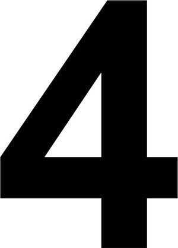

ⲧⲁϥⲧⲉ v ϥⲧⲟⲟⲩ.
(numeral)
number
four [τετρας]

complete
453a
625a
625a
ϥⲧⲟⲟⲩ SB (rare, mostly ⲇ̅), ⲃⲧ. S, ϥⲧⲁⲩ AA2, f ϥⲧⲟⲉ SAA2, ϥⲧⲟ SA2B, ⲃⲧⲟ S, ⲃⲧⲁ F, ϥⲧⲟⲩ- SAA2B, ϥⲧⲟⲟⲩ-, ϥⲧⲉⲩ- S, ϥⲧⲉ- B, ϥⲧⲁⲩ- F nn, four: Ps 93 tit SB, JA '75 5 232 τετράς, Jo 11 39 SA2 τεταρταῖος; ShC 42 2 ⲡⲉϥ. ⲙⲛⲡⲥⲟⲟⲩ Wednesday & Friday, BMar 220 ⲁⲛⲧⲱⲟⲩⲛ ⲙⲡϥ., BMis 449 a book ⲉϥⲉⲓⲣⲉ ⲛϥ. fourfold: Jo 19 23 SA2 ⲥⲁϩⲧϥ. (B Gk diff, v ⲥⲱϩⲉ p c); f: Lev 11 21 B (S ϥ. ⲛⲟⲩⲉⲣⲏⲧⲉ); as adj, before nn: Zech 1 18 SA, Ap 4 8 τέσσαρες, Sa 18 24 τετρα-; PS 30 ϥ. ⲛⲕⲟⲟϩ; f: Ge 2 10 ϥⲧⲟⲉ, Ac 21 9 (var -ⲟ) τέσ.; PS 354 ϥⲧⲟ ⲛⲇⲩⲛⲁⲙⲓⲥ, Br 269 ϥⲧⲟ ⲙⲡⲩⲗⲏ, Mani H 37 A2 ϥ. ⲛⲣⲉⲓⲧⲉ, Mani 1 A2 ϥⲧⲟ ⲛⲥⲧⲟⲗⲏ, BM 1013 13 B ⲛϫⲓⲥⲉ, BM 528 I tit F ⲃ. ⲛϫⲁⲁⲓ; after nn: Ap 6 8 ⲟⲩⲛ ϥ. (var ⲛϥ.) τέταρτος; constr: Is 30 5 B ϥⲧⲉⲫⲁⲧ (SF ⲧⲃⲛⲏ) τετράπους, Lev 11 21 S ϥⲧⲉⲩⲟⲩⲉⲣⲏⲧⲉ (var ϥⲧⲟ ⲛ-, B ϥ. alone), Job 1 19 B ϥⲧⲟⲩⲗⲁⲕϩ (S ϥ. ⲛⲕⲟⲟϩ), Nu 1 21 S ϥⲧⲉⲩϣⲉ (var ϥⲧⲟⲩ-), Job 42 12 S ϥⲧⲉⲩϣⲟ (var ϥⲧⲟⲟⲩ ⲛ-), Dan 7 2 B ϥⲧⲟⲩⲑⲏⲟⲩ, Zech 2 6 A, Mt 24 31 SF sim, Ac 10 11 S ϥⲧⲟⲩⲧⲟⲡ (var ϥⲧⲟⲟⲩ ⲛ-); PS 78 S ϥⲧⲟⲩϫⲟⲩⲱⲧ (ϥ. ⲛϫ. 2 Kg 19 32, Ryl 158 place-name ?, ib 385) eighty, CO 459 S ϥⲧⲟⲟⲩⲙⲛⲧ fourteen (cf below), Mor 18 73 S ⲧⲉⲩϣⲏ ⲛϥⲧⲉⲩⲡⲟⲟⲩ (var ib 19 81 ⲡⲉϥⲧⲟⲟⲩⲡ., cf ϣⲙⲧⲡⲟⲟⲩ) = Miss 4 145 B ⲡⲓⲙⲁϩⲇ̅ ⲛⲉϫⲱⲣϩ ⲓⲥϫⲉⲛ-; fourteen: Ge 31 41 ⲙⲛⲧⲁϥⲧⲉ ⲛⲣⲟⲙⲡⲉ, Nu 29 13 ⲙ. ⲛϩⲓⲉⲓⲃ, Mani K 42 A2 ⲙⲛⲧⲉϥⲧⲉ ⲛⲛⲁϭ ⲛ[ⲁⲓ]ⲱⲛ; twenty-four: Ap 11 16 ϫⲟⲩⲧⲁϥⲧⲉ, Hag 2 1 A -ⲉϥⲧⲉ, AZ 34 87 Sf -ⲉϥⲧⲉ, Pcod Mor 11 F ϫⲟⲩⲧⲏⲃⲧⲓ, ib ϫⲟⲩⲧⲁⲃ; thirty-four: Ge 11 16 ⲙⲁⲁⲃⲧⲁϥⲧⲉ; forty-four: Mani 1 A2 ϩⲙⲉⲧⲉϥⲧⲉ. Ordinals: Ge 2 14 ⲡⲙⲉϩϥ. ⲛⲓⲉⲣⲟ, ib 15 16 ⲧⲙⲉϩϥⲧⲟ ⲛⲅⲉⲛⲉⲁ, Zech 7 1 S (Tuki 203) ⲧⲙⲉϩϥⲧⲟⲉ ⲛⲣⲟⲙⲡⲉ, Am 1 3 A ⲧⲙⲁ(ϩ)ϥⲧⲟⲉ ⲛⲣ.; BM 244 ⲡⲉϥⲙⲉϩϥ. (cf Jo 11 39 above), Mani K 36 A2 ⲡⲙⲁϩϥ. ⲛⲓⲱⲧ, ib 27 ⲧⲙⲁϩϥⲧⲟⲉ ⲛⲟⲩϣⲏ, BG 16 ⲧⲙⲉϩϥⲧⲟⲉ ⲛⲉⲝⲟⲩⲥⲓⲁ; PS 81 ⲡⲙⲉϩϫⲟⲩⲧⲁϥⲧⲉ ⲙⲯⲁⲗⲙⲟⲥ, ib 94 ⲡⲙⲉϩⲙⲁⲃⲧⲁϥⲧⲉ ⲙⲯ., R 1 4 49 ⲧⲙⲉϩϥⲧⲟⲩ(ϫⲟⲩ)ⲱⲧⲉ ⲛⲣⲟⲙⲡⲉ.
See also:
| view | ⲟⲩⲁ S ⲟⲩⲉ SfALFO ⲟⲩⲉⲉ, ⲟⲩⲉⲓ LF ⲟⲩⲉⲉⲓ LF ⲟⲩⲁⲓ BO ⲟⲩⲁⲓⲉⲓ F female: ⲟⲩ(ⲉ)ⲓ SBF female: ⲟⲩⲉⲓⲁ S female: ⲟⲩ(ⲉ)ⲓⲉ SAL female: ⲟⲩⲓ B | (numeral) one, someone [εις, τις, ετερος]68 |
| view | ⲥⲛⲁⲩ SAB ⲥⲛⲁⲁⲩ S ⲥⲛⲉⲩ ALB ⲥⲛⲟ A ⲥⲛⲱ Sa ⲥⲛⲉⲟⲩ SaFO ⲥⲛⲛⲉⲟⲩ, ⲥⲛⲟⲩ Sa ⲥⲛⲁⲟⲩ O female: ⲥⲛⲧⲉ SA female: ⲥⲛⲟⲩⲧⲉ Sf female: ⲥⲛⲟⲩϯ BF female: ⲥⲏⲛϯ F | (numeral) two
― as noun [δυο] ― as adj ―― before nn ―― after nn119 |
| view | ϣⲟⲙⲛⲧ, ϣ(ⲉ)ⲙⲛⲧ S ϣⲟⲙⲧ SB ϣⲁⲙⲉⲛⲧ Sf ϣⲁⲙⲛⲧ SaL ⳉⲁⲙⲧ A ϣⲁⲙⲧ LF ϣⲙⲧ- SL ϣ(ⲉ)ⲙⲛⲧ- S ⳉⲛⲧ-, ⳉⲛⲧⲉ- A female: ϣⲟⲙⲧⲉ SO female: ϣⲟⲙⲛⲧⲉ S female: ⳉⲁⲙⲧⲉ A female: ϣⲁⲙⲧⲉ, ϩⲟⲙⲧⲉ L female: ϣⲟⲙϯ B | (numeral) three [τρεις]
thirteen132 |
| view | ϯⲟⲩ SALF ⲧⲓⲟⲩ B female: ϯⲉ SALF female: ϯ SA | (numeral) five [πεντε]
ⲧⲏ in fifteen, twenty-five &c1664 |
| view | ⲥⲟⲟⲩ SB ⲥⲁⲩ SaALF ⲥⲉⲩ- S female: ⲥⲟ, ⲥⲟⲉ, ⲥⲟⲟⲩⲉ S female: ⲥⲱⲉ A female: ⲥⲟⲉ L female: ⲥⲁ F | (numeral male) six [εξ]1508 |
| view | ⲥⲁϣϥ SL ⲥⲁⳉϥ A ⲥⲉϣϥ S ϣⲁϣϥ B ϣⲉϣⲃ F ⲥⲟϣϥ NH female: ⲥⲁϣϥⲉ SL female: ⲥⲁϩⲃⲉ Sa female: ⲥⲁϩϥⲉ L female: ⲥⲁⳉϥⲉ A female: ⲥⲁⲥⲫⲉ, ⲥⲁⲥⲫⲓ O female: ⲥⲟϣϥⲉ NH | (numeral male) seven [επτα]65 |
| view | ϣⲙⲟⲩⲛ SLF ⳉⲙⲟⲩⲛ A ϣⲙⲏⲛ B female: ϣⲙⲟⲩⲛⲉ S female: ϣⲙⲟⲩⲛⲓ F female: ϣⲙⲏⲛⲓ B | (numeral male) eight [οκτω]916 |
| view | male: ⲯⲓⲥ SA male: ⲯⲓⲧ SB female: ⲯⲓⲧⲉ SL female: ⲯⲓⲥⲉ S ⲑ̅ BF female: ⲑ̅ϯ B | (numeral) nine1291 |
| view | ⲙⲏⲧ SALB female: ⲙⲏⲧⲉ S ⲙⲏϯ B ⲙⲛⲧ- SAL ⲙⲉⲧ-, ⲙⲛⲧ- B | (numeral) ten
― ordinals ― ⲙⲛⲧ-, ⲙⲉⲧ-, (eleven to nineteen) ― ordinals with ⲙⲉϩ-1112 |
| view | ϫⲟⲩⲱⲧ SAF ϫⲱⲧ B ϫⲟⲩⲧ- SSaALF ϫⲟⲩⲱⲧ-, ϫⲁⲩⲱⲧ- S ϫⲱⲧ- S ϫⲟⲧ- SF female: ϫⲟⲩⲱⲧⲉ SLF female: ϫⲟⲩⲟⲩⲱⲧⲉ SL | (numeral) twenty [εικοσι]2473 |
| view | ⲙⲁⲁⲃ SL ⲙⲁⲁⲃⲉ, ⲙⲁⲃⲉ A ⲙⲁⲡ B ⲙⲏⲃ F female: ⲙⲁⲁⲃⲉ S ⲙⲁⲁⲃ-, ⲙⲁⲃ- SL ⲙⲁⲡ- B | (numeral) thirty1045 |
| view | ϩⲙⲉ SALB ϩⲙⲏ Sf ϩⲙ B | (numeral male/female) forty957 |
| view | ϣⲉ SALBO ϣⲏ SfF | (numeral) hundred [εκατον]1848 |
| view | ϣⲟ SLB ⳉⲟ A ϣⲁ SfF | (numeral) thousand [χιλιοι, χιλιας]164 |
| view | ⲧⲃⲁ SAL ⲑⲃⲁ B ⲧⲃⲉ F | (numeral male) ten thousand [μυριας]165 |